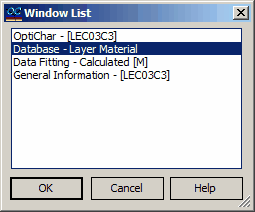

Windows List
The “Window List” command in the View menu allows you to see which OptiChar windows are currently open and to bring any of them to the foreground. This feature is particularly useful when multiple windows are present on the screen. To activate any of the listed windows (i.e., to bring it to the foreground), select it from the displayed list and click the OK button. Alternatively, you can double-click the name of the window.

For a quick switch between different windows, it is also convenient to use the Window menu.